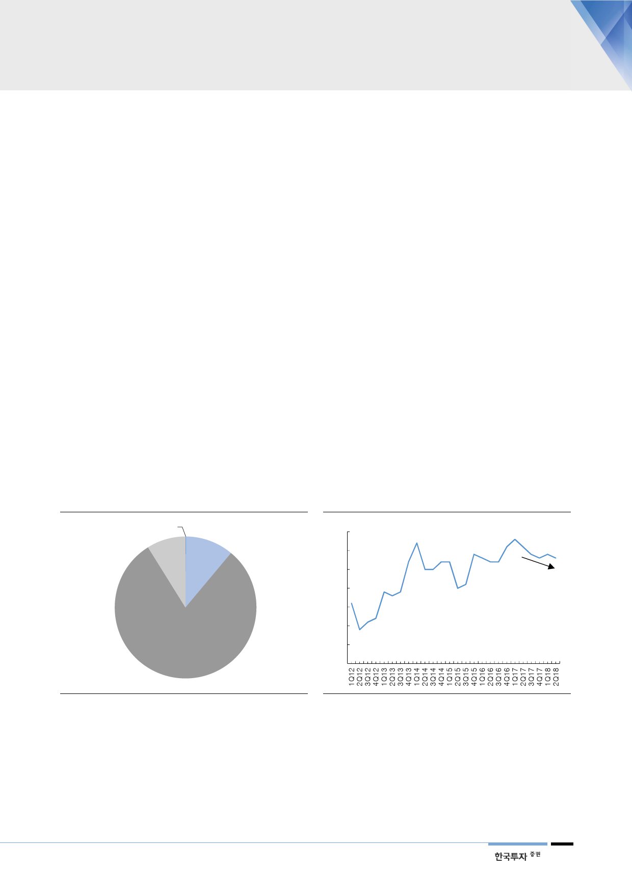

IV. 금융부문 개선 배경 - 현대차
현대차 금융부문 개선은
HCA의 리스 실적 개선 때문
1. 리스 잔존가치 현실화
금융부문 개선의 업계 공통 요인이 아닌, 현대차 고유 요인을 살펴볼 시점이다.
현대차 금융부문 개선은 미국 내 리스 손실이 이익으로 전환되면서 HCA의 실적
이 개선됐기 때문이다.
리스 시작시점의 잔존가치
추정은 리스 반납차량 규모와
리스 손익에 큰 영향
이를 자세히 보기 전에 먼저 리스에 대한 이해를 높일 필요가 있다. 리스(lease)
란 일반적으로 장기임대를 말한다. 자동차 리스는 보통 3년 단위로 계약한다. 현
재 차량가격에서 3년 후 잔존가치를 제외한 금액이 월 리스 임대료의 기준이 된
다. 따라서 리스 시작시점의 잔존가치 추정은 월 리스료에 큰 영향을 미친다.
잔존가치에 비해 중고차 가치가 낮을 경우 리스 반납이 늘어나고 리스 손익 악화
소비자들은 리스계약이 만료되면 HCA와 같은 금융회사가 최초에 제시한 잔존가
치와 계약종료 시점의 실제 중고차 가격을 비교한 뒤 리스계약 연장여부를 결정
한다. 이때 리스 잔존가치가 중고차 가격보다 높으면 리스를 연장할 이유가 없다.
이 경우 소비자는 리스계약을 종료하고 차량을 반납한다(off-lease). 리스 반납
차량은 중고차 가치가 하락할수록 증가하는 경향이 있다. 이때 HCA는 반납된 차
량을 중고차 시장에 판매하는데, 원가는 리스계약 당시의 잔존가치이기 때문에
역마진이 발생하면 그 만큼 손실이 생긴다.
[그림 21] 리스 만기별 분포(2015, 미국 기준)
0~23개월
0%
42개월
이상
9%
24~36개월
11%
36~41개월
80%
자료: J.D. Power, NADA, 한국투자증권
[그림 22] 포드의 리스 반납률(off-lease)
(%)
85
80
75
70
65
60
55
50
자료: Ford, 한국투자증권
11